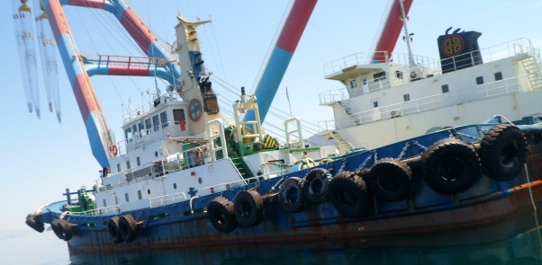

3,200 BHP 187 GRT Ocean-going Harbor Tug Blt 1992 Jp
/ informed by BLUE MARINE CO., LTD.
(18-416)

- BUILT : 03.02.1993 KAWASAKI DOCKYARD CO., LTD.
(LAUNCHING DATE. 25.11.1992)
- FLAG/CLASS : KOREA / KR, KRS1 | TUG BOAT | CLEAN1 | KRM1
- NAVI. AREA : GREAT COASTAL
- LOA/L/B/D : 39.82 / 36.54 X 10.00 X 4.80 m
- DWT/draft : 199.298 ton / 3.471 m
- GRT : 187 ton (ITC 486 ton)
- MAIN ENGINE : YANMAR Z280-EN, 1600ps X 690rpm X 2set (TTL. 3200ps)
- GENERATOR : 2 X AC 130KVA 225VOLT, 1 X AC 80KVA 225VOLT
- PROPELLER : REX-PELLER
- FIRE PUMP : MORITA, 75 m³/hr, HEAD 20.00m
- WATER SERVICE SYSTEM : 40A PIN TYPE, HYDRANT 4ea, HOSE 4ea, NOZZLE 4ea
- BOLLARD PULL : 40.75 ton
- TOWING WINCH : 30 ton
- COMPLEMENT : 9 PERSON
- TANK CAPA. : FO 143.3 FW 34.0 WB 45.6 m³
- LAST/NEXT SS : 19 JUNE 2012/ 18 JUNE 2017
- LOCATION : KOREA
Information History
- 180619 : She is available for sale.